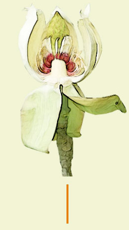
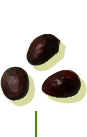
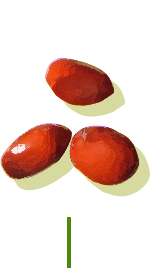

일본목련의 모든 것
꽃 5-6월
열매 9-11월
이름의 유래
일본에서 건너온 목련이라는 뜻이다.
향기가 진해 향 목련이라고도 불리며,
북한에서는 황 목련,
일본 이름은 호오노키 라고 한다.
활용
나무껍질은 위를 튼튼히 하거나
오줌이 잘 나오게 하는 한약재로 쓰인다.
일본 사람들은 커다란 잎으로 주먹밥을 싸는데
잎의 향기가 밴 음식이 일품이다.
꽃
잎이 다 자란 후,
5~6월에 꽃을 피운다.
잎
잎이 커서 질감이 거칠어 보이며,
가지 끝에 모여 난다.
잎 뒷면
흰색이며 부드러운 털이
흩어져 난다.

꽃봉오리 단면
겉은 꽃덮이 조각이 겹쳐 있고,
가운데 수술과 암술이 들어있다.

씨
겉껍질은 붉은색이고
광택이 있다.

속씨
겉면에 주름이 있다.
열매
칸칸이 나뉜 열매 속에
씨가 만들어진다.
겨울눈
끝눈이 아주 크다.
털이 없는 2장의 가죽질.
눈비는 조각에 싸여있다.